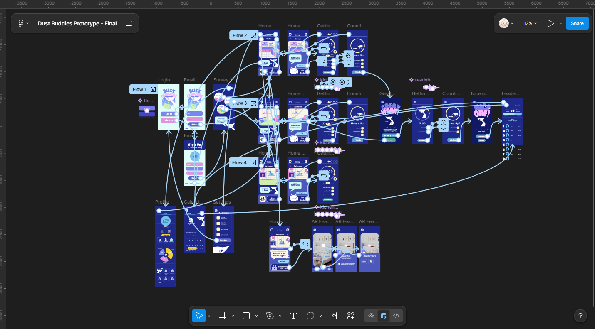
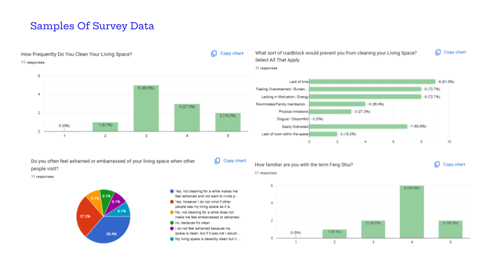
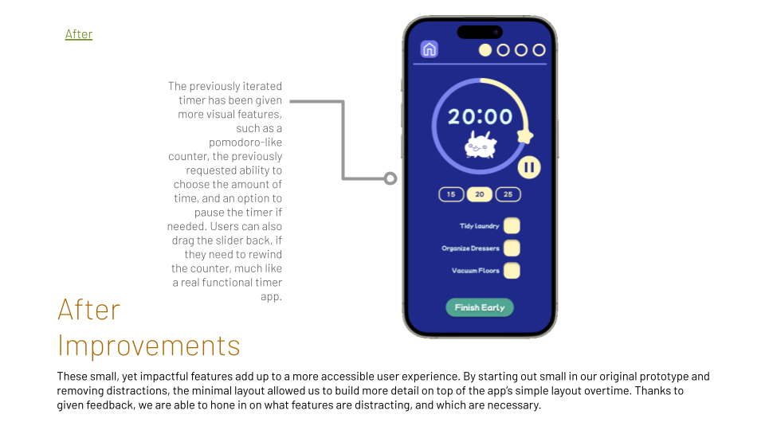
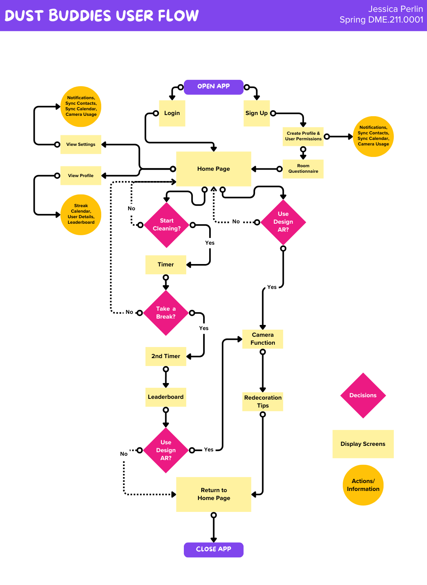
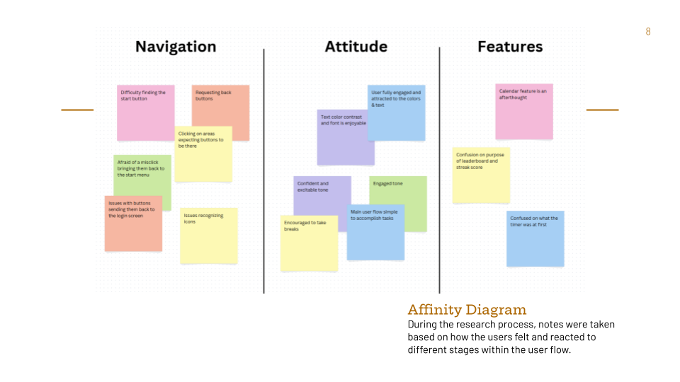

Dust Buddies Case Study
Dust Buddies
Case Study Details
Dust Buddies is an app I created from various basic wireframes, into high-fidelity prototypes through multiple rounds of user testing. This project is dedicated to encouraging users to clean their space through a task based, game-like design. This app is designed to tackle "dirty home shame" and help those who may feel unmotivated to clean by guiding them through a few short minutes of simple cleaning tasks.
View Figma Prototype Download Case Study PDF
Dust Buddies
Project Background
The main audience for this project are a younger audience between children and young adults who may suffer with ADHD, Autism, Depression, or those who are simply struggling with finding motivation to clean their living spaces. Research goals focused on determining weak points in the user flow and the best placement for the second user flow to be based on feedback on the needs and preferences of the user for natural app growth and development.


Dust Buddies
Observations & Insights
Four types of user testing (Lynssa, Maze, Monitored, Unmonitored) have been performed to hone the user flow based on the natural needs of the user, so Dust Buddies can sit comfortably within their daily routine. Users tend to struggle with finding time and purpose to clean. 63.7% of users feel the effects of "Dirty Home Shame" when outsiders perceive their living space, yet only 45.5% of those users state that they don't clean as regularly as they would prefer due to factors like time or emotional burdens.

Dust Buddies
Recommendations
The app's flow and navigation has been designed to help the user feel engaged with the task. After multiple tests and surveys, the current design reduces confusion and removes distractions, letting the users focus on what they want to use the app for.

Dust Buddies
User Feedback
Text, layout, and navigation were all improved in small increments that made an incredible difference in the app's development. Users slowly discovered their preferences and needs were met overtime, which allowed Dust Buddies as a product to grow alongside the user's need.

Dust Buddies
Citations
All Character Figure Assets: Illustrated By Jessica Perlin
Assets Used In The Background Image of Bathroom, Bedroom, and Kitchen: Dany Santos from Canva under Canva's Free Content License Agreement
Photography of Bedroom: Photo by Monica Silvestre from Pexels: https://www.pexels.com/photo/photography-of-bedroom-1034584/